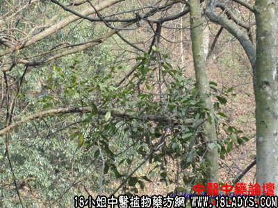

枫香树寄生(中药材植物名:节枝檞寄生)(植物科目:桑寄生科)

植物名：节枝檞寄生。
生长环境：本品为绿色、无叶寄生灌木，寄生于树上。
分布：我国两广、湖南、四川、云南、贵州等省；国外如印度、马拉西亚有分布。
入药部分：全株。
采集期：夏、秋。
采购地点：从药材公司购入。
性味：性平、味微苦。
功能：祛风去湿、舒筋活络。
主治、用量和用法：1、风湿脚气：干用1至2两，加猪脚筋活鸡脚，清水煎服；2、四肢痛软：干用1至2两，清水煎服；3、关节痛：用法同上。
（方歌）风湿脚气步艰难，治络枫香树寄生，猪筋或同鸡脚煎，壮骨祛风力更生。